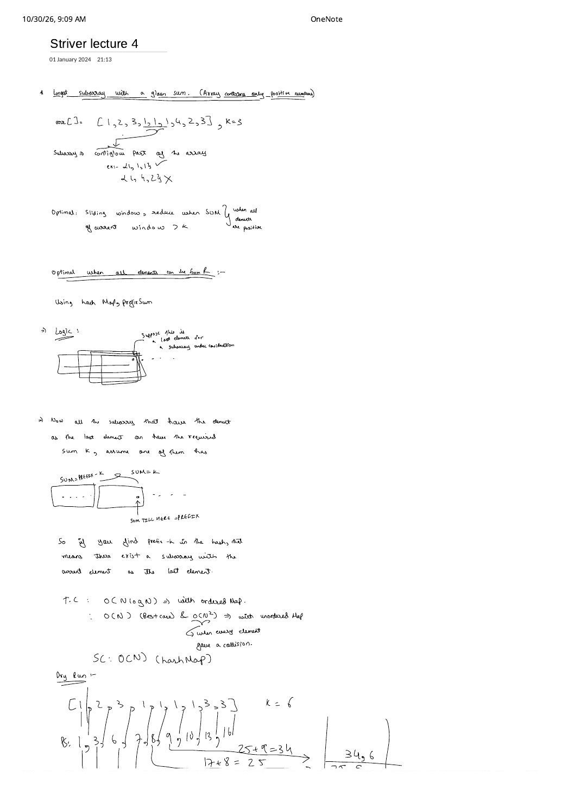
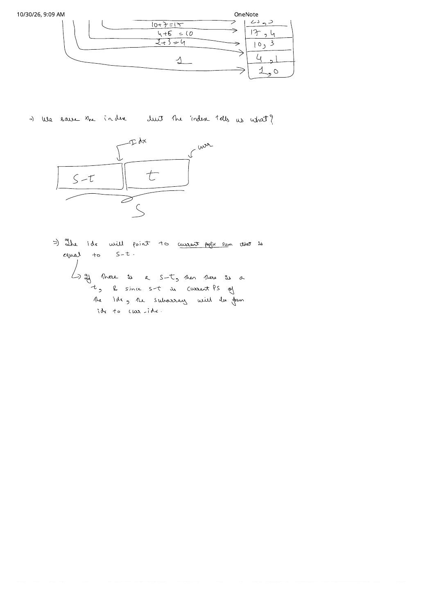

Striver Array Lecture 4: Longest Subarray with Given Sum $K$ (Prefix Sum Map vs. Sliding Window)
Expanded from handwritten competitive coding study note: 04_Striver_lecture_4.pdf (2 pages) · Jump to original scans
Given an integer array arr and a target sum $K$, find the length of the longest contiguous subarray whose elements sum to $K$. Lecture 4 is one of the best diagnostic questions in interviews because what counts as "optimal" flips completely depending on whether negative numbers can appear in the input.
Subarray vs. Subsequence (Page 1 Opening Clarification)
A subarray must be a contiguous slice $\text{arr}[l..r]$. On Page 1's opening example arr = [1, 2, 3, 1, 1, 1, 4, 2, 3] with $K = 3$:
[1, 1, 1](indices $3..5$) is a valid subarray of sum $3$ and length $3$ ✓ (beating[1, 2]of length $2$ and[3]of length $1$).- Non-adjacent selections like
{1, 4, 2}are subsequences, not subarrays ✗.
1. Brute-Force Baseline: Enumerating All Subarrays ($\mathcal{O}(N^2)$)
Generating every pair $(l, r)$ ($0 \le l \le r < N$) and summing $\text{arr}[l..r]$ from scratch with a third loop takes $\mathcal{O}(N^3)$. Accumulating sum += arr[r] as $r$ advances from $l$ to $N - 1$ drops the brute force to $\mathcal{O}(N^2)$ time and $\mathcal{O}(1)$ space — works for positives, zeros, and negatives alike, but TLEs once $N \ge 10^5$.
2. Optimal When Elements Can Be Arbitrary Reals / Integers ($\text{arr}[i] \in \mathbb{Z}$) — Prefix Sum + Hash Map
When negative numbers can appear, window sums are no longer monotonic. Instead, fix the ending index $\text{curr}$ of a candidate subarray and let $S = \sum_{m=0}^{\text{curr}} \text{arr}[m]$ denote the cumulative prefix sum up to $\text{curr}$. Look at the two block diagrams drawn across Pages 1 and 2:
2.1 Two Make-or-Break Interview Details
arr = [2, 0, 0, 3] and $K = 3$. The prefix sums are [2, 2, 2, 5]. At $\text{curr} = 3$, $S = 5$ and we look up $S - K = 2$:
- If you blindly executed
mp[prefix] = iat every step,mp[2]got overwritten from $0 \to 1 \to 2$, yielding length $3 - 2 = 1$ ([3]) instead of the true longest subarray[0, 0, 3]of length $3 - 0 = \mathbf{3}$! - Because maximizing $\text{curr} - \text{idx}$ requires minimizing $\text{idx}$, insert
mp[prefix] = ionly whenprefixis not already in the map! (Also seedmp[0] = -1up front so any prefix where $S == K$ immediately yields length $i - (-1) = i + 1$.)
std::map(balanced red-black tree): deterministic $\mathcal{O}(N \log N)$ worst-case time, $\mathcal{O}(N)$ space.std::unordered_map(hash table): $\mathcal{O}(N)$ average/best-case time, $\mathcal{O}(N)$ space — but $\mathcal{O}(N^2)$ worst-case if adversarial inputs trigger bucket collisions on every element!
curr |
arr[curr] |
Prefix $S$ | Need $S - 6$ | mp.find(S - 6) |
Candidate Span & Len | maxLen |
|---|---|---|---|---|---|---|
| 0 | 1 | 1 | $-5$ | miss | — | 0 |
| 1 | 2 | 3 | $-3$ | miss | — | 0 |
| 2 | 3 | 6 | $0$ | hit at $\text{idx} = -1$ | [1, 2, 3] (len $2 - (-1) = 3$) | 3 |
| 3 | 1 | 7 | $1$ | hit at $\text{idx} = 0$ | [2, 3, 1] (len $3 - 0 = 3$) | 3 |
| 4 | 1 | 8 | $2$ | miss | — | 3 |
| 5 | 1 | 9 | $3$ | hit at $\text{idx} = 1$ | [3, 1, 1, 1] (len $5 - 1 = \mathbf{4}$) | 4 |
| 6 | 1 | 10 | $4$ | miss | — | 4 |
| 7 | 3 | 13 | $7$ | hit at $\text{idx} = 3$ | [1, 1, 1, 3] (len $7 - 3 = 4$) | 4 |
| 8 | 3 | 16 | $10$ | hit at $\text{idx} = 6$ | [3, 3] (len $8 - 6 = 2$) | 4 |
Study-note tip on the bottom of Page 1: In the handwritten dry-run sketch on [1, 2, 3, 1, 1, 1, 1, 3, 3], the first row below the array writes the true prefix sums PS: 1, 3, 6, 7, 8, 9, 10, 13, 16, while the side box accidentally summed the prefix sums a second time (1, 4, 10, 17, 25, 34). Always store the first-level prefix sum $S$ itself as the hash key, as shown in the table above!
3. Optimal When All Elements Are Non-Negative ($\text{arr}[i] \ge 0$) — $\mathcal{O}(1)$-Space Sliding Window
When $\text{arr}[i] \ge 0$ (positives and zeros only, no negatives), prefix sums are monotonically non-decreasing. That monotonicity lets us drop the $\mathcal{O}(N)$ hash map completely in favour of two pointers left = 0, right = 0:
- Expand the window rightwards by adding
sum += arr[right]. - While
left <= right && sum > K, the current window is already too heavy — and extendingrightfurther can only makesumeven larger! Safely shrink from the left viasum -= arr[left++]. - If
sum == K, updatemaxLen = max(maxLen, right - left + 1).
Why Sliding Window Fails the Moment Negatives Appear
Consider arr = [4, -2, 1] with $K = 3$. At right = 0, sum = 4 > 3, so the sliding window immediately shrinks left++, permanently discarding index $0$ — missing the full-array answer 4 + (-2) + 1 = 3 (length $3$)! With negatives present, exceeding $K$ now does not mean future elements can't pull the sum back down to $K$. Use the Prefix-Sum Hash Map whenever negatives exist.
Amortized $\mathcal{O}(2N)$ Complexity Proof: Although a while loop sits inside a for loop, left only ever increments ($0 \to N$) and never resets backwards. Thus right increments $N$ times and left increments at most $N$ times across the entire execution $\implies \le 2N$ operations total, i.e. $\mathcal{O}(N)$ time and $\mathcal{O}(1)$ extra space.
4. Clean Reference Implementations (C++ & Python)
#include <bits/stdc++.h>
using namespace std;
// 1. Optimal when arr contains positives, zeros, AND negatives:
// O(N) expected time (or O(N log N) with std::map), O(N) space
int longestSubarrayWithSumK_General(const vector<int>& arr, long long K) {
unordered_map<long long, int> firstIdx;
firstIdx.reserve(arr.size() * 2);
firstIdx[0] = -1; // handles subarrays starting at index 0
long long prefix = 0;
int maxLen = 0;
for (int curr = 0; curr < (int)arr.size(); ++curr) {
prefix += arr[curr];
auto it = firstIdx.find(prefix - K);
if (it != firstIdx.end()) {
maxLen = max(maxLen, curr - it->second);
}
// Only record the EARLIEST index for each prefix sum!
if (firstIdx.find(prefix) == firstIdx.end()) {
firstIdx[prefix] = curr;
}
}
return maxLen;
}
// 2. Optimal when all arr[i] >= 0 (positives & zeros only):
// O(2N) = O(N) deterministic time, O(1) extra space
int longestSubarrayWithSumK_NonNegative(const vector<int>& arr, long long K) {
int left = 0, maxLen = 0;
long long sum = 0;
for (int right = 0; right < (int)arr.size(); ++right) {
sum += arr[right];
while (left <= right && sum > K) {
sum -= arr[left++];
}
if (sum == K) {
maxLen = max(maxLen, right - left + 1);
}
}
return maxLen;
}def longest_subarray_sum_k_general(arr: list[int], k: int) -> int:
"""Optimal for positives, zeros, and negatives: O(N) avg time, O(N) space."""
first_idx: dict[int, int] = {0: -1}
prefix = 0
max_len = 0
for curr, x in enumerate(arr):
prefix += x
if (prefix - k) in first_idx:
max_len = max(max_len, curr - first_idx[prefix - k])
if prefix not in first_idx:
first_idx[prefix] = curr
return max_len
def longest_subarray_sum_k_non_negative(arr: list[int], k: int) -> int:
"""Optimal when all elements >= 0: O(N) time, O(1) extra space."""
left = 0
window_sum = 0
max_len = 0
for right, x in enumerate(arr):
window_sum += x
while left <= right and window_sum > k:
window_sum -= arr[left]
left += 1
if window_sum == k:
max_len = max(max_len, right - left + 1)
return max_len5. Method Selector & Key Edge Cases
| Input Domain | Optimal Algorithm | Time Complexity | Extra Space |
|---|---|---|---|
| Positives / Zeros / Negatives ($\text{arr}[i] \in \mathbb{Z}$) | Prefix Sum + Earliest-Index Map | $\mathcal{O}(N)$ avg / $\mathcal{O}(N \log N)$ tree map | $\mathcal{O}(N)$ |
| Non-Negative Only ($\text{arr}[i] \ge 0$) | Variable Two-Pointer Sliding Window | $\mathcal{O}(2N) = \mathcal{O}(N)$ worst-case | $\mathcal{O}(1)$ |
- $K = 0$ on non-negative arrays (e.g.,
[0, 0, 5], $K = 0$): Notice the guardwhile (left <= right && sum > K)! If $K = 0$ and an element exceeds $0$,leftsteps toright + 1representing an empty window of sum $0$ and lengthright - (right + 1) + 1 = 0; if negative $K$ is passed to the non-negative solver, return0immediately up front. - 64-bit Prefix Sums: With $N = 10^5$ and $|a_i| \le 10^9$, cumulative sum $S$ reaches $10^{14}$ — always type
prefix,sum, and map keys aslong longin C++.
From the Handwritten Notes
View original handwritten page — Page 1: Sliding Window vs. Prefix-Sum Hash Map, Map Complexity & Dry Run


04_Striver_lecture_4.pdf p. 1: Contiguity definition on [1, 2, 3, 1, 1, 1, 4, 2, 3], sliding window for positives, prefix - K lookup for $\mathbb{R}$, ordered vs. unordered map complexity, and dry run on [1, 2, 3, 1, 1, 1, 1, 3, 3] ($K = 6$).View original handwritten page — Page 2: Prefix-Sum Index Meaning & Subarray Span $S - t$


04_Striver_lecture_4.pdf p. 2: Why saving idx where prefix sum equals $S - t$ certifies a contiguous subarray of sum $t$ spanning from after idx up to curr (length curr - idx).